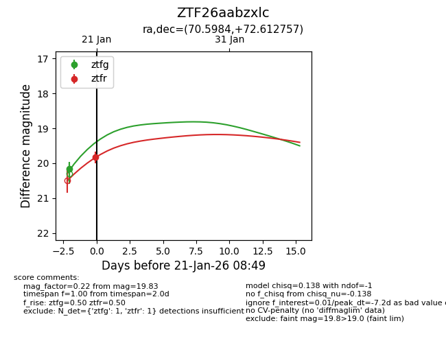
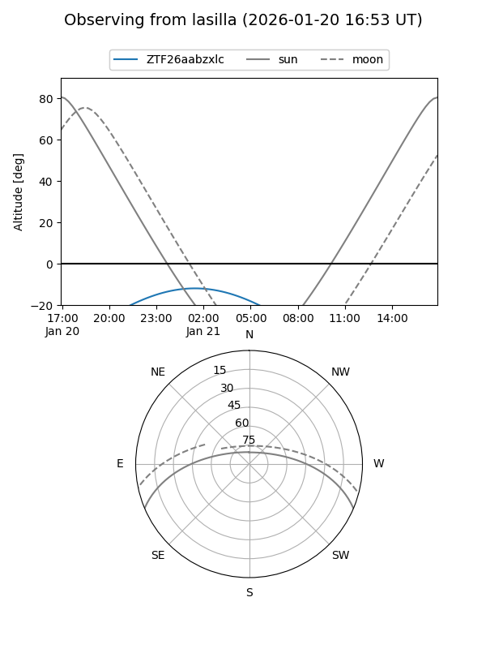
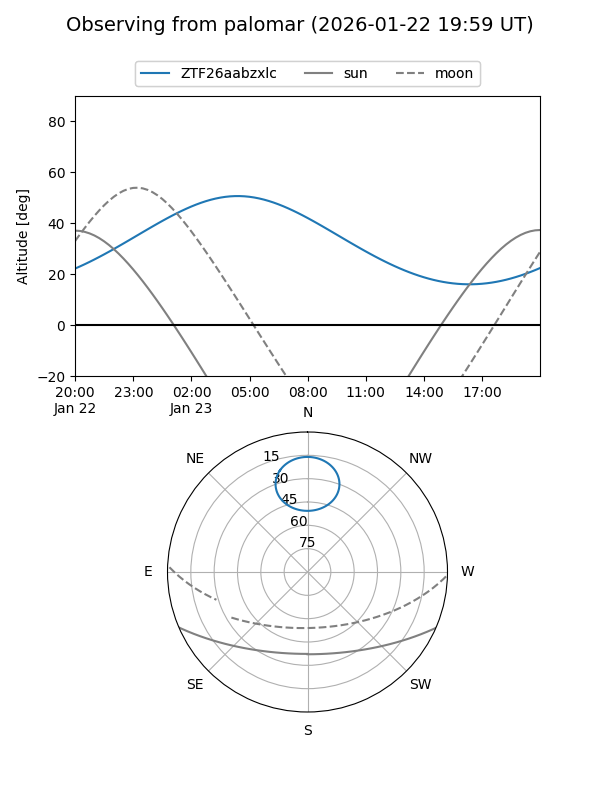
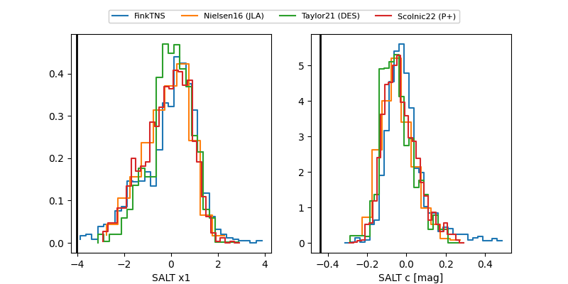

ZTF26aabzxlc
Target ZTF26aabzxlc at 2026-01-21 07:46
Aliases and brokers:
FINK: link
Lasair: link
ALeRCE: link
alt names
ZTF26aabzxlc (ztf,fink_ztf)
Coordinates:
equatorial (ra, dec) = 70.5984,+72.61276
equatorial (HMS+DMS) = 04:42:23.61,+72:36:45.92
galactic (l, b) = (138.2580,+17.04893)
Flags:
Photometry:
last ztfg=20.16, ztfr=19.83
1 ztfg, 1 ztfr detections
Lightcurve

Visibility


Additional plots
